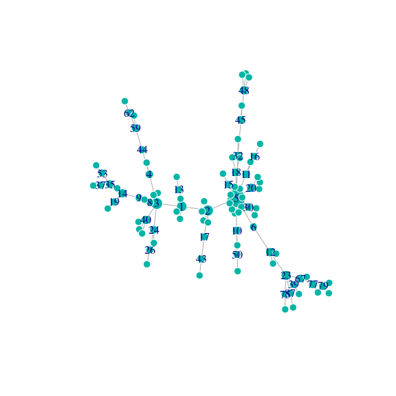
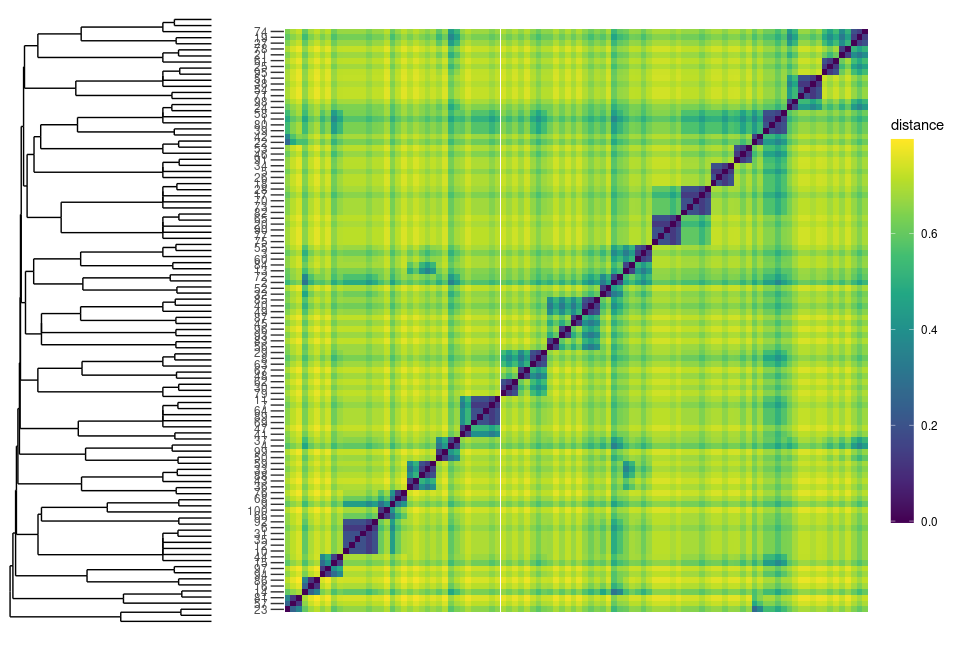
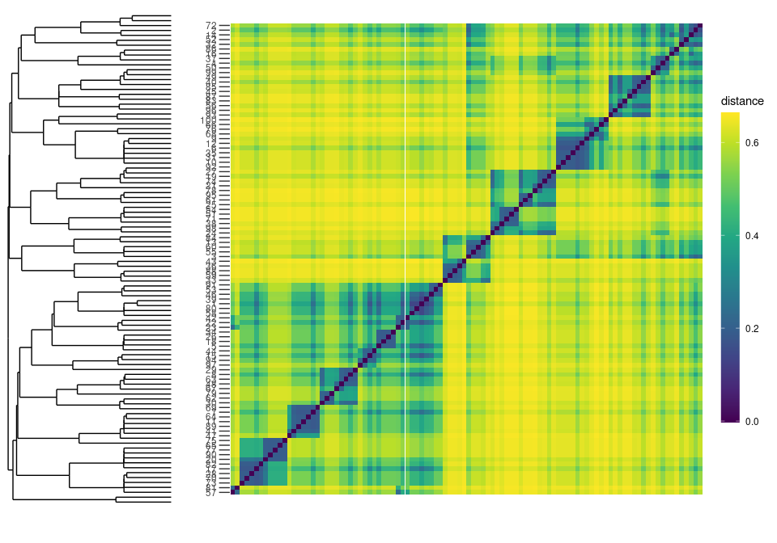

Overview
The diffudist package provides several functions for evaluating the diffusion distance between nodes of a complex network.
Installation
# Or the development version from GitHub
# install.packages("devtools")
devtools::install_github("gbertagnolli/diffudist")Usage
Additionally to diffudist you will also need the igraph package, because the main arguments of the functions in diffudist are networks as igraph objects.
library(diffudist)
library(igraph)
#>
#> Attaching package: 'igraph'
#> The following objects are masked from 'package:stats':
#>
#> decompose, spectrum
#> The following object is masked from 'package:base':
#>
#> union
igraph_options(
vertex.frame.color = "white",
vertex.color = "#00B4A6",
label.family = "sans-serif")Examples
N <- 100
g <- sample_pa(N, directed = FALSE)
deg_g <- degree(g)
vertex_labels <- 1:N
vertex_labels[which(deg_g < quantile(deg_g, .75))] <- NA
plot(g, vertex.label = vertex_labels, vertex.size = 6 + 10 * (deg_g - min(deg_g)) / max(deg_g))
D <- get_DDM(g, tau = 2, type = "Normalized Laplacian", verbose = FALSE)
MERW_Pt <- get_diffu_Pt(g, tau = 2, type = "MERW")
#> Unweighted network.
#> Evaluating the MERW Normalized Laplacian matrixThe probability transition matrix returned from get_diffusion_probability_matrix (or its shortened version get_diffu_Pt) is the matrix e − *τ**Lrw. The diffusion dynamics is controlled by the specific Laplacian matrix Lrw = I − Trw, where T*rw is the jump matrix of the discrete-time random walk corresponding to our continuous-time dynamics.
Let us check that MERW_Pt is an actual stochastic (transition) matrix, i.e., that its rows are probability vectors
if (sum(MERW_Pt) - N > 1e-6) {
print("MERW_Pt is not a stochastic matrix")
} else {
print("MERW_Pt is a stochastic matrix")
}
#> [1] "MERW_Pt is a stochastic matrix"Compute diffusion distances from the Probability matrix MERW_Pt as follows:
if (requireNamespace("parallelDist", quietly = TRUE)) {
# parallel dist
D_MERW <- as.matrix(parallelDist::parDist(MERW_Pt))
} else {
# dist
D_MERW <- as.matrix(stats::dist(MERW_Pt))
}And finally plot the distance matrices (requires ggplt2)
if (requireNamespace("tidyverse", quietly = TRUE)) {
library(tidyverse)
plot_ddm <- function(ddm, clustering = FALSE) {
N <- nrow(ddm)
as_tibble(ddm) %>%
add_column("from" = 1:N, .before = 1) %>%
gather(key = to, value = value, -from, factor_key = TRUE) %>%
mutate(
"to" = as.numeric(gsub(pattern = "V", replacement = "", x = to)),
"value" = as.numeric(value)
) %>%
ggplot(mapping = aes(x = to, y = from, fill = value)) +
geom_tile() +
coord_equal() +
labs(x = "", y = "") +
scale_y_reverse(breaks = seq(N, 1, -10), expand = c(0, 0)) +
scale_x_continuous(position = "top", breaks = seq(1, N, 10), expand = c(0, 0)) +
scale_fill_distiller(palette = "Spectral", limits = c(0, ceiling(max(ddm)))) +
guides(fill = guide_colourbar(barwidth = 1, barheight = 10, nbin = 100)) +
theme_minimal() +
theme(
panel.grid.minor = element_blank(),
panel.grid.major = element_blank(),
axis.text.x = element_blank(),
axis.text.y = element_blank()) -> pl
return(pl)
}
} else {
plot_ddm <- function(ddm, clustering = TRUE) {
gplots::heatmap.2(D, distfun = as.dist)
}
}
#> ── Attaching packages ─────────────────────────────────────── tidyverse 1.3.1 ──
#> ✓ ggplot2 3.3.5 ✓ purrr 0.3.4
#> ✓ tibble 3.1.5 ✓ dplyr 1.0.7
#> ✓ tidyr 1.1.4 ✓ stringr 1.4.0
#> ✓ readr 2.0.2 ✓ forcats 0.5.1
#> ── Conflicts ────────────────────────────────────────── tidyverse_conflicts() ──
#> x dplyr::as_data_frame() masks tibble::as_data_frame(), igraph::as_data_frame()
#> x purrr::compose() masks igraph::compose()
#> x tidyr::crossing() masks igraph::crossing()
#> x dplyr::filter() masks stats::filter()
#> x dplyr::groups() masks igraph::groups()
#> x dplyr::lag() masks stats::lag()
#> x purrr::simplify() masks igraph::simplify()
plot_ddm(D)
Plot with hierarchical clustering
And finally plot the distance matrices (requires ggplot2 and ggdengro)

plot_distance_matrix(D_MERW)